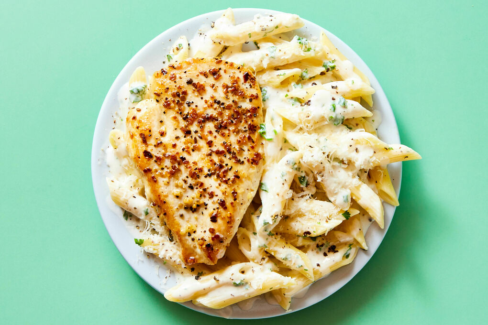

Protein Chicken Pasta

Description
Protein chicken pasta is a quick, easy, and delicious meal.
It is perfect for a low-calorie, high-protein option
that can be prepared in 20 to 30
minutes, and enjoyed throughout the week. This dish consists of juicy tender chicken
breasts, with a creamy alfredo sauce, and penne protein pasta.
This pairs wonderfully with garlic or cheesey bread.
Ingredients
- Banza Penne Protein Pasta Noodles
- Chicken Breasts
- Canned or Homemade Alfredo Sauce
- Garlic Cloves
- Fresh Thyme
- Yellow Onion
- Mozzarella Cheese
- Parmesean Cheese
- Cooking Oil
Steps
Prep and Cook Chicken
- Mince onions and garlic
- Prepare chicken with seasoning of your choice (Breasts can be left whole or cut into smaller pieces)
- Heat pan on the stove using medium heat
- Grease pan with cooling oil
- Add seasoned chicken breasts to the pan
- Add minced garlic and onions to the pan with the chicken breasts
- Flip the chicken when bottom side is seared: golden brown color
- Add a twig of thyme and a tablespoon of butter to the pan
- Baste the melted butter onto the chicken with a spoon
- When chicken is cooked through (internal temperature of 165°F) transfer to a clean cutting board
- Discard thyme and turn off heat, saving the pan for a later step
Cook Pasta Noodles
- Bring a large pot of salted water to a rolling boil
- Add noodles, stir, and reduce to a simmer
- Cook to desired firmness, stirring throughout, about 6-8 minutes
- Strain and rinse with water
Combine all Ingredients
- Reheat and grease the saved pan (low to medium heat)
- Add alfredo sauce and noodles to the pan and stir
- Reseason to your liking (optional)
- Add parmesean and mozzarella and stir
- Once heated, dish the pasta and add cooked chicken along with more parmesean